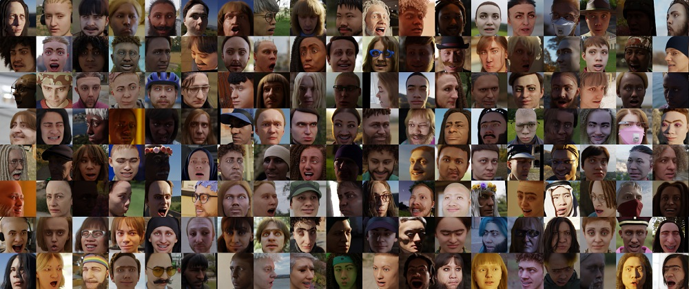
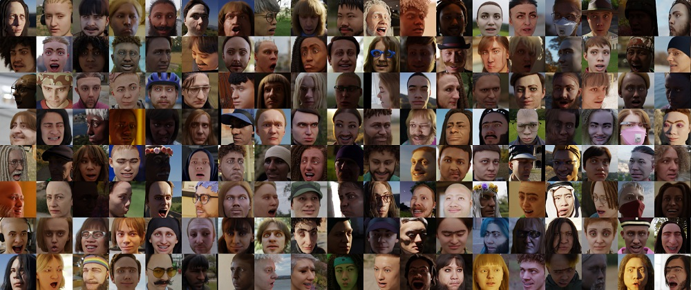
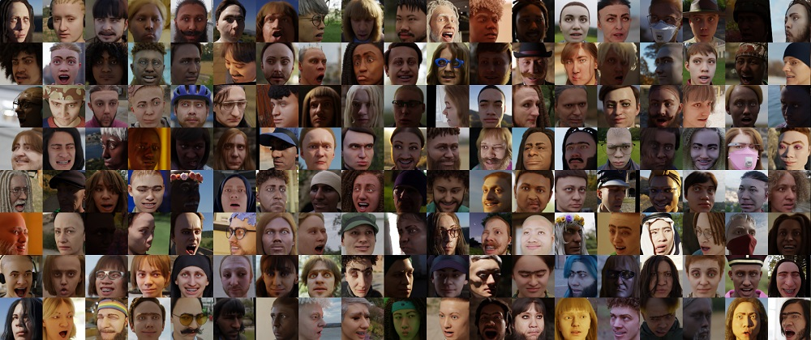

Computer Vision
and Pattern Recognition 2024

A common pitfall in the pursuit of higher image quality is the sidelining of the quality of the underlying geometry. This issue is evident in datasets like FFHQ, which lack accurate camera parameters and ground truth meshes, relying instead on approximate camera parameters. Such limitations hinder their applicability for tasks requiring precise geometric information. Previous approaches, such as EG3D and StyleSDF, have attempted to address these issues with varying degrees of success. State-of-the-art face recognition models are trained on millions of real human face images collected from the internet. GeoGen aims to tackle three major problems associated with such large-scale face recognition datasets.
The FFHQ dataset's lack of accurate camera parameters and ground truth meshes limits its use for precise geometric tasks. This motivated us to create and release a new dataset with accurate camera parameters, and 7 images of 512×512 for each of 10,000 identities, enhancing realism and usability in 3D applications.
The GeoGen dataset is a comprehensive collection of over 70,000 synthetic face images designed for advanced face recognition and 3D geometry reconstruction research.
The dataset is essential for training deep learning models that are geared towards high-fidelity 3D facial geometry reconstruction.
This dataset was introduced in our paper titled GeoGen: Geometry-Aware Generative Modeling via Signed Distance Functions.
The dataset contains:
We build on the synthetic face generation framework of Wood et al. to create a dataset of over one million synthetic face images. This synthetics dataset helps us to overcome three primary shortcomings of existing large-scale face recognition datasets:
We define identity as a unique combination of facial geometry, texture, eye color, and hair style. For each identity, we sample a set of accessories including clothing, make-up, glasses, face-wear, and head-wear.
After sampling the identity and the accessories, we can render multiple images by varying the pose, expression, environment (lighting and background) and camera.
Our latest advances in 3D geometry reconstruction, as detailed in our findings for both ShapeNet Cars and Synthetic Heads, demonstrate significant improvements over previous methods. By incorporating Signed Distance Functions (SDF) and Depth Loss, GeoGen achieves superior accuracy and detail in reconstructed models.
| Method | Chamfer ↓ | MSE ↓ | HD ↓ | EMD ↓ | MSD ↓ |
|---|---|---|---|---|---|
| ShapeNet Cars | |||||
| EG3D | 0.31 | 0.31 | 0.85 | 0.44 | 0.33 |
| GeoGen w/o SDF&Depth Loss | 0.27 | 0.28 | 0.77 | 0.42 | 0.31 |
| GeoGen | 0.25 | 0.27 | 0.77 | 0.40 | 0.29 |
| Synthetic Heads | |||||
| EG3D | 0.21 | 0.29 | 0.65 | 0.54 | 0.35 |
| GeoGen w/o SDF& Depth Loss | 0.19 | 0.29 | 0.59 | 0.45 | 0.26 |
| GeoGen | 0.17 | 0.27 | 0.56 | 0.43 | 0.24 |
These results highlight our model's capability in providing detailed and accurate reconstructions, reducing metrics like Chamfer and MSE significantly across all tested models, and improving handling metrics like HD, EMD, and MSD.
The precision in our 3D models showcases our capability to tackle complex reconstruction challenges. These results are pivotal for applications requiring precise geometric data and serve as a benchmark for future developments in the field.
@inproceedings{esposito2024geogen,
title={GeoGen: Geometry-Aware Generative Modeling via Signed Distance Functions},
author={Esposito, Salvatore and Xu, Qingshan and Kania, Kacper and Hewitt, Charlie and Mariotti, Octave and Petikam, Lohit and Valentin, Julien and Onken, Arno and Mac Aodha, Oisin},
booktitle={Proceedings of the Conference on Computer Vision and Pattern Recognition (CVPR)},
year={2024}
organization={IEEE}
}